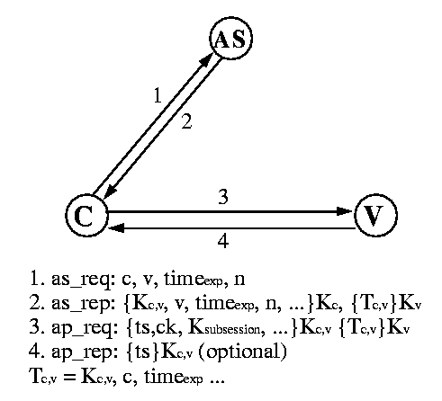

USC/ISI Technical Report number ISI/RS-94-399
Copyright © 1994 Institute of Electrical and Electronics Engineers.
Reprinted, with permission, from IEEE Communications Magazine,
Volume 32, Number 9, pages 33-38, September 1994.
Click here to
see Kerberos home page.
Kerberos: An Authentication
Service for Computer Networks
When using authentication based on cryptography, an attacker
listening to the network gains no information that would enable it to
falsely claim another's identity. Kerberos is the most commonly used
example of this type of authentication technology.
Modern computer systems provide service to multiple users and require
the ability to accurately identify the user making a request. In
traditional systems, the user's identity is verified by checking a
password typed during login; the system records the identity and uses
it to determine what operations may be performed. The process of
verifying the user's identity is called authentication. Password
based authentication is not suitable for use on computer networks.
Passwords sent across the network can be intercepted and subsequently
used by eavesdroppers to impersonate the user. While this
vulnerability has been long known, it was recently demonstrated on a
major scale with the discovery of planted password collecting programs
at critical points on the Internet
[4].
Authentication, Integrity, Confidentiality, and Authorization
Authentication is the verification of the identity of a party
who generated some data, and of the integrity of the data. A
principal is the party whose identity is verified. The
verifier is the party who demands assurance of the principal's
identity. Data integrity is the assurance that the data received is
the same as generated. Authentication mechanisms differ in the
assurances they provide: some indicate that data was generated by the
principal at some point in the past, a few indicate that the principal
was present when the data was sent, and others indicate that the data
received was freshly generated by the principal. Mechanisms also
differ in the number of verifiers: some support a single verifier per
message, while others support multiple verifiers. A third difference
is whether the mechanism supports non-repudiation, the ability of the
verifier to prove to a third party that the message originated with
the principal.
Because these differences affect performance, it is important to
understand the requirements of an application when choosing a method.
For example, authentication for electronic mail may require support
for multiple recipients and non-repudiation, but can tolerate greater
latency. In contrast, poor performance would cause problems for
authentication to a server responding to frequent queries.
Other security services include confidentiality and authorization.
Confidentiality is the protection of information from disclosure to
those not intended to receive it. Most strong authentication methods
optionally provide confidentiality. Authorization is the process by
which one determines whether a principal is allowed to perform an
operation. Authorization is usually performed after the principal
has been authenticated, and may be based on information local to the
verifier, or based on authenticated statements by others.
The remainder of this article will concentrate on authentication for
real-time, interactive services that are offered on computer networks.
We use the term real-time loosely to mean that a client process is
waiting for a response to a query or command so that it can display
the results to the user, or otherwise continue performing its intended
function. This class of services includes remote login, file system
reads and writes, and information retrieval for applications like
Mosaic.
Why Kerberos
The introduction discussed the problems associated with password based
authentication and, in particular, how passwords can be collected by
eavesdropping. In addition to the security concern, password based
authentication is inconvenient; users do not want to enter a password
each time they access a network service. This has led to the use of
even weaker authentication on computer networks: authentication
by assertion.
While more convenient for the user, authentication by assertion hardly
qualifies as authentication at all. Examples include the Berkeley
R-command suite and the IDENT protocol. With authentication by
assertion, applications assert the identity of the user and the server
believes it. Such authentication is easily thwarted by modifying the
application. This may require privileged access to the system, which
is easily obtained on PCs and personal workstations. While most uses
of authentication by assertion require that a connection originate
from a ``trusted'' network address, on many networks, addresses are
themselves simply assertions.
Stronger authentication methods base on cryptography are required.
When using authentication based on crytography, an attacker listening
to the network gains no information that would enable it to falsely
claim another's identity. Kerberos is the most commonly used example
of this type of authentication technology. Unfortunately, strong
authentication technologies are not used as often as they should be,
although the situation is gradually improving.
The Kerberos Authentication Service
Kerberos is a distributed authentication service that allows a process
(a client) running on behalf of a principal (a user) to prove its
identity to a verifier (an application server, or just server) without
sending data across the network that might allow an attacker or the
verifier to subsequently impersonate the principal. Kerberos
optionally provides integrity and confidentiality for data sent
between the client and server. Kerberos was developed in the
mid-'80s as part of MIT's Project Athena [2]. As use
of Kerberos spread to other environments, changes were needed to
support new policies and patterns of use. To address these needs,
design of Version 5 of Kerberos (V5) began in 1989
[11].
Though V4 still runs at many sites, V5 is considered to be standard
Kerberos.
Limitations of Kerberos
Limitations of Kerberos have been described in the literature
[1]. Though most are a matter of preference or apply to
V4 and early drafts of V5, a few are fundamental and are discussed
here. In particular, Kerberos is not effective against password
guessing attacks; if a user chooses a poor password, then an attacker
guessing that password can impersonate the user. Similarly, Kerberos
requires a trusted path through which passwords are entered. If the
user enters a password to a program that has already been modified by
an attacker (a Trojan horse), or if the path between the user and the
initial authentication program can be monitored, then an attacker may
obtain sufficient information to impersonate the user. Kerberos can be
combined with other techniques, as described later, to address these
limitations.
To be useful, Kerberos must be integrated with other parts of the
system. It does not protect all messages sent between two computers;
it only protects the messages from software that has been written or
modified to use it. While it may be used to exchange encryption keys
when establishing link encryption and network level security services,
this would require changes to the network software of the hosts
involved.
Kerberos does not itself provide authorization, but V5 Kerberos passes
authorization information generated by other services. In this
manner, Kerberos can be used as a base for building separate
distributed authorization services
[14].
How Kerberos works
The Kerberos Authentication System
[18]
uses a series
of encrypted messages to prove to a verifier that a client is running
on behalf of a particular user. The Kerberos protocol is based in
part on the Needham and Schroeder authentication protocol
[13], but with changes to support the needs of the
environment for which it was developed. Among these changes are the
use of timestamps to reduce the number of messages needed for basic
authentication [6], the addition of a
``ticket-granting'' service to support subsequent authentication
without re-entry of a principal's password, and different approach to
cross-realm authentication (authentication of a principal registered
with a different authentication server than the verifier).
The remainder of this section describes the Kerberos protocol. The
description is simplified for clarity; additional fields are
present in the actual protocol. Readers should consult RFC 1510
[10]
for a more thorough description of the Kerberos protocol.
Kerberos Encryption
Though conceptually, Kerberos authentication proves that a client is
running on behalf of a particular user, a more precise statement is
that the client has knowledge of an encryption key that is known by
only the user and the authentication server. In Kerberos, the user's
encryption key is derived from and should be thought of as a password;
we will refer to it as such in this article. Similarly, each
application server shares an encryption key with the authentication
server; we will call this key the server key.
Encryption in the present implementation of Kerberos uses the data
encryption standard (DES). It is a property of DES that if ciphertext
(encrypted data) is decrypted with the same key used to encrypt it,
the plaintext (original data) appears. If different encryption keys
are used for encryption and decryption, or if the ciphertext is
modified, the result will be unintelligible, and the checksum in the
Kerberos message will not match the data. This combination of
encryption and the checksum provides integrity and confidentiality for
encrypted Kerberos messages.
The Kerberos Ticket
The client and server do not initially share an encryption key.
Whenever a client authenticates itself to a new verifier it relies on
the authentication server to generate a new encryption key and
distribute it securely to both parties. This new encryption key is
called a session key and the Kerberos ticket is used to to
distribute it to the verifier.
The Kerberos ticket is a certificate issued by an authentication
server, encrypted using the server key. Among other information, the
ticket contains the random session key that will be used for
authentication of the principal to the verifier, the name of the
principal to whom the session key was issued, and an expiration time
after which the session key is no longer valid. The ticket is not
sent directly to the verifier, but is instead sent to the client who
forwards it to the verifier as part of the application request.
Because the ticket is encrypted in the server key, known only by the
authentication server and intended verifier, it is not possible for
the client to modify the ticket without detection.
Application request and response
Messages 3 and 4 in figure 1 show the application
request and response, the most basic exchange in the Kerberos
protocol. It is through this exchange that a client proves to a
verifier that it knows the session key embedded in a Kerberos ticket.
There are two parts to the application request, a ticket (described
above) and an authenticator. The authenticator includes, among other
fields: the current time, a checksum, and an optional encryption key,
all encrypted with the session key from the accompanying ticket.

Figure 1: Basic Kerberos authentication protocol (simplified)
Upon receipt of the application request, the verifier decrypts the
ticket, extracts the session key, and uses the session key to decrypt
the authenticator. If the same key was used to encrypt the
authenticator as used to decrypt it, the checksum will match and the
verifier can assume the authenticator was generated by the principal
named in the ticket and to whom the session key was issued. This is
not by itself sufficient for authentication since an attacker can
intercept an authenticator and replay it later to impersonate the
user. For this reason the verifier additionally checks the timestamp
to make sure that the authenticator is fresh. If the timestamp is
within a specified window (typically 5 minutes) centered around the
current time on the verifier, and if the timestamp has not been seen
on other requests within that window, the verifier accepts the request
as authentic. A discussion of the benefits and drawbacks to the use
of timestamps in authentication protocols can be found in
[15].
At this point the identity of the client has been verified by the
server. For some applications the client also wants to be sure of
the server's identity. If such mutual authentication is required,
the server generates an application response by extracting the
client's time from the authenticator, and returns it to the client
together with other information, all encrypted using the session key.
Authentication request and response
The client requires a separate ticket and session key for each
verifier with which it communicates. When a client wishes to create
an association with a particular verifier, the client uses the
authentication request and response, messages 1 and 2 from
figure 1, to obtain a ticket and session key from the authentication
server. In the request, the client sends the authentication server
its claimed identity, the name of the verifier, a requested expiration
time for the ticket, and a random number that will be used to match
the authentication response with the request.
In its response, the authentication server returns the session key,
the assigned expiration time, the random number from the request, the
name of the verifier, and other information from the ticket, all
encrypted with the user's password registered with the authentication
server, together with a ticket containing similar information, and
which is to be forwarded to the verifier as part of the application
request. Together, the authentication request and response and the
application request and response comprise the basic Kerberos
authentication protocol.
Obtaining additional tickets
The basic Kerberos authentication protocol allows a client with
knowledge of the user's password to obtain a ticket and session key
for and to prove its identity to any verifier registered with the
authentication server. The user's password must be presented each
time the user performs authentication with a new verifier. This can
be cumbersome; instead, a system should support single sign-on, where
the user logs in to the system once, providing the password at that
time, and with subsequent authentication occurring automatically.
The obvious way to support this, caching the user's password on the
workstation, is dangerous. Though a Kerberos ticket and the key
associated with it are valid for only a short time, the user's
password can be used to obtain tickets, and to impersonate the user
until the password is changed. A better approach, and that used by
Kerberos, is to cache only tickets and encryption keys (collectively
called credentials) that will work for a limited period.
The ticket granting exchange of the Kerberos protocol allows a user
to obtain tickets and encryption keys using such short-lived
credentials, without re-entry of the user's password. When the user
first logs in, an authentication request is issued and a ticket and
session key for the ticket granting service is returned by the
authentication server. This ticket, called a ticket granting
ticket, has a relatively short life (typically on the order of 8
hours). The response is decrypted, the ticket and session key saved,
and the user's password forgotten.
Subsequently, when the user wishes to prove its identity to a new
verifier, a new ticket is requested from the authentication server
using the ticket granting exchange. The ticket granting exchange is
identical to the authentication exchange except that the ticket
granting request has embedded within it an application request,
authenticating the client to the authentication server, and the ticket
granting response is encrypted using the session key from the ticket
granting ticket, rather than the user's password.
Figure 2 shows the complete Kerberos authentication
protocol. Messages 1 and 2 are used only when the user first logs in
to the system, messages 3 and 4 whenever a user authenticates to a new
verifier, and message 5 is used each time the user authenticates
itself. Message 6 is optional and used only when the user requires
mutual-authentication by the verifier.

Figure 2: Complete Kerberos Authentication Protocol (simplified)
Protecting application data
As described so far, Kerberos provides only authentication: assurance
that the authenticated principal is an active participant in an
exchange. A by-product of the Kerberos authentication protocol is the
exchange of the session key between the client and the server. The
session key may subsequently be used by the application to protect the
integrity and privacy of communications. The Kerberos system defines
two message types, the safe message and the private
message to encapsulate data that must be protected, but the
application is free to use a method better suited to the particular
data that is transmitted.
Additional Features
The description of Kerberos just presented was greatly simplified.
Additional fields are present in the ticket, authenticator, and
messages, to support book-keeping and additional functionality. Some
of the features present in Vesion 5 include renewable and forwardable
tickets, support for higher level authorization mechanisms, and
support for multi-hop cross-realm authentication (described in the
following section). A more rigorous presentation of the Kerberos
protocol, and a description of each field is found in RFC 1510
[10].
Kerberos Infrastructure and Cross-Realm Authentication
In a system that crosses organizational boundaries, it is not
appropriate for all users to be registered with a single
authentication server. Instead, multiple authentication servers will
exist, each responsible for a subset of the users or servers in the
system. The subset of the users and servers registered with a
particular authentication server is called a realm (if a realm
is replicated, users will be registered with more than one
authentication server). Cross-realm authentication allows a principal
to prove its identity to a server registered in a different realm.
To prove its identity to a server in a remote realm, a Kerberos
principal obtains a ticket granting ticket for the remote realm from
its local authentication server. This requires the principals's local
authentication server to share a cross-realm key with the verifier's
authentication server. The principal next uses the ticket granting
exchange to request a ticket for the verifier from the verifier's
authentication server, which detects that the ticket granting ticket
was issued in a foreign realm, looks up the cross-realm key, verifies
the validity of ticket granting ticket, and issues a ticket and
session key to the client. The name of the client, embedded in the
ticket, includes the name of the realm in which the client was
registered.
With Version 4, it was necessary for an authentication server to
register with every other realm with which cross-realm authentication
was required. This was not scalable; complete interconnection
required the exchange of n^2 keys where n was the number of
realms.
In contrast, Version 5 supports multi-hop cross-realm authentication,
allowing keys to be shared hierarchically. With V5, each realm shares
a key with its children and parent, i.e. the ISI.EDU realm shares a
key with the EDU realm which also shares keys with MIT.EDU, USC.EDU
and WASHINGTON.EDU. If no key is shared directly by ISI.EDU and
MIT.EDU, authentication of the client bcn@ISI.EDU to a server
registered with the MIT.EDU realm proceeds by obtaining a ticket
granting ticket for EDU from the ISI.EDU authentication server, using
that ticket granting ticket to obtain a ticket granting ticket for the
MIT.EDU realm from the EDU authentication server, and finally
obtaining a ticket for the verifier from the MIT.EDU
authentication server.
The list of realms that are transited during multi-hop cross-realm
authentication is recorded in the ticket and the verifier accepting
the authentication makes the final determination about whether the
path that was followed should be trusted. Shortcuts through the
hierarchy are supported and can improve both the trust in and the
performance of the authentication process.
This hierarchical organization of realms is similar to the
hierarchical organization of certification authorities and certificate
servers for public-key cryptography [3]. As with the
public key certification hierarchy, the utility of the authentication
infrastructure supporting authentication between parties not
previously known to one another depends in part on the availability of
authentication servers for realms near the top of the hierarchy.
Unfortunately, political and legal ambiguity has the potential to slow
the establishment of these realms. In the mean time, pairwise
relationships between regions of the hierarchy (shortcuts) are
important. A discussion of the tradeoffs available when establishing
realms for large organizations can be found in [5].
Obtaining and Using Kerberos
Source code releases for V4 and Beta V5 Kerberos are freely available
from the MIT, however, MIT does not officially support these releases.
Several companies have taken reference implementations from MIT and
provide commercially supported products. Information on the free
releases and the supported versions can be obtained by reading the
``Kerberos Frequently Asked Questions'' document [8]
periodically
posted to the Usenet newsgroup comp.protocols.kerberos, or by sending
a message to info-kerberos@mit.edu.
Setting up the authentication server
Since the Kerberos authentication server maintains a database of
passwords (encryption keys) for all the users at a site, it is
extremely important that it be installed on a carefully protected and
physically secure machine. If possible, the machine should be
dedicated to running the authentication server and the number of users
with access should be limited.
Initial passwords for a site's users must be registered with the
authentication server. If the number of users is small, initial
registration is best achieved in person in front of an accounts
administrator who can check a driver's license, passport, or other
physical document.
At sites with a large number of users and limited staff devoted to
system administration, less cumbersome and less secure procedures for
initial registration may present an acceptable tradeoff. For example,
if users regularly log on to a trusted system, the login program can
be modified to register the passwords of non-registered users after
verifying that the password is valid. While simpler than in-person
registration, such bootstrapping techniques must be used with caution
since they rely initially on the security of a weaker authentication
system.
Kerberos Utilities
Several utility programs must be installed on the workstation to allow
users to obtain Kerberos credentials (kinit), destroy credentials
(kdestroy), list credentials (klist), and change their Kerberos
password (kpasswd). Some sites choose to integrate the Kerberos login
tool ``kinit'' with the workstation login program so that users do not
need to type their password twice. This makes the use of Kerberos
nearly transparent; users may not even be aware they are using
Kerberos.
Using ``Kerberized'' applications
Client/server applications must be modified to use Kerberos for
authentication; such Kerberos-aware applications are said to be
Kerberized. Kerberizing an application is the most difficult part of
installing Kerberos. Fortunately, the MIT reference implementation
includes versions of popular applications (the Berkeley R-commands,
telnet, and POP) with support for Kerberos already added. Other
applications have been Kerberized by vendors and are included in their
supported products. The availability of Kerberos-aware applications
has improved with time, and is expected to improve further. However,
a site would have to arrange itself to add Kerberos support to any
application developed in-house.
It is generally necessary to modify the client/server protocol when
Kerberizing an application unless the protocol designer has already
made provisions for an authentication exchange. The application
program must generate and send a Kerberos application request to the
application server during the protocol initialization phase, and the
server must verify the Kerberos authentication information. The
request must be transmitted within the client/server protocol. The
Kerberos library provides routines that generate and verify these
messages.
More recent implementations of Kerberos provide a Generic Security
Services Application Programmer Interface (GSSAPI) [12]. The
GSSAPI provides a standard programming interface which is
authentication mechanism independent. This allows the application
programmer to design an application and application protocol which can
used alternative different authentication technologies, including
Kerberos. The use of the GSSAPI in application programs is
recommended wherever possible.
Because it is a generic authentication interface, the GSSAPI does not
support all of the functionality provided by Kerberos. For example,
Kerberos's notion of user-to-user authentication is not currently
supported. Hence, an application programmer will not always be able
to use the GSSAPI in all cases, and may have to use the Kerberos API
in order to use some features.
Other approaches for improving security
Kerberos is not a complete solution to network security problems.
Several limitations have been mentioned in this article. Other tools
can also provide partial solutions to network security problems, and
when combined with Kerberos, stronger security can be attained. Among
these other tools are one-time passcodes and public-key cryptography.
One-time passcodes
A one-time passcode authentication mechanism uses a different passcode
each time authentication is required. Kerberos does not protect
against the theft of a password through a Trojan horse login program on
the user's workstation, but if the user's password were to change each
time it was entered, a password stolen in this manner would be useless
to an attacker. One-time passcode authentication methods typically
use a credit card sized device that either displays a time varying
password (called a passcode), or returns a passcode when a challenge
is entered on a small keypad. Some methods use a printed list of
passcodes that can be used one after another. When a user logs in
using one of these devices, the user is prompted for the passcode.
Depending on the style, the prompt may include the challenge that is
to be typed into the device. The user enters the passcode from the
device in much the same way as a normal password.
One-time passcode devices are not by themselves sufficient for
securing distributed systems because the information needed to verify
the passcode might not be present on all servers with which the client
interacts during a session, and because it is not practical to require
entry of the passcode on every server access. However, one-time
passcode methods can be combined with Kerberos so that knowledge of
both the passcode and a password-based encryption key are required to
successfully complete the initial authentication exchange. Commercial
products that combine one-time passcodes with Kerberos are available.
Public-key Cryptography
In public-key cryptography, encryption and decryption are performed
using a pair of keys such that knowledge of one key does not provide
knowledge of the other key in the pair [7]. One key is
published and is called the public key, and the other key is kept
private. This second key is called the private key, not to be
confused with a secret key which is shared by the parties to
communication in a conventional cryptosystem (it takes two to share a
secret, but once you tell something to anyone else it is no longer
private). Public-key cryptography has several advantages over
conventional cryptography when used for authentication. These include
more natural support for authentication to multiple recipients,
support for non-repudiation (since the verifier does not know the
private key, it can't generate a message that purports to be from the
authenticated principal), and the elimination of secret encryption
keys from the central authentication server.
While public-key encryption is well suited for use in authentication
by store and forward applications such as electronic mail [9],
and it is required by applications where a signature is verified by
many readers [17], performance is a problem for
high-performance servers that perform many authentication operations.
With the RSA [16] algorithm, the most accepted algorithm for public key
cryptography, the private key operation (signing or decrypting a
message) is expensive.
Work is underway to add public-key support to Kerberos, where it can
be confined to the initial request for a ticket granting ticket,
allowing users with registered public keys (perhaps for privacy
enhanced mail) to obtain Kerberos tickets for application servers
supporting Kerberos authentication. Subsequent exchanges, especially
the application request, would use conventional cryptography for
better performance. Public-key encryption may also be used by
authentication servers to exchange conventional cross-realm keys
on-demand between authentication servers, with the cost amortized over
many requests.
Summary
Authentication is critical for the security of computer systems.
Without knowledge of the identity of a principal requesting an
operation, it's difficult to decide whether the operation should be
allowed. Traditional authentication methods are not suitable for use
in computer networks where attackers monitor network traffic to
intercept passwords. The use of strong authentication methods that do
not disclose passwords is imperative. The Kerberos authentication
system is well suited for authentication of users in such
environments.
Acknowledgments
The design of Version 4 of Kerberos was the work of Steve Miller and
Clifford Neuman, with contributions from Jerome Saltzer, and Jeffrey
Schiller. Version 5 was designed by John Kohl and Clifford Neuman.
The Kerberos development effort was led by Steve Miller, Clifford
Neuman, Jennifer Steiner, John Kohl, and Theodore Ts'o. Many members
of Project Athena and the Internet community contributed to the design
and implementation of Kerberos. Celeste Anderson, Ravi Ganesan, Virgil
Gligor, Sridhar Gullapalli, Charlie Lai, Gennady Medvinsky, Stuart
Stubblebine, and Peter Will commented on drafts of this paper.
The major sponsors of Project Athena were Digital Equipment
Corporation and IBM. Neuman's security efforts are funded in
part by the Advance Research Projects Agency under NASA Cooperative
Agreement NCC-2-539 and other awards, and by CyberSafe Corporation
(formerly Open Computing Security Group). The views and conclusions
contained in this paper are those of the authors and should not be
interpreted as representing the official policies, either expressed
or implied, of any of the funding organizations. Figures and
descriptions in this paper were provided by the authors and are used
with permission.
References
-
S. M. Bellovin and M. Merritt.
Limitations of the kerberos authenication system.
Computer Communication Review, 20(5):119-132, October 1990.
postscript
- G. A. Champine, D. E. Geer, Jr., and W. N. Ruh.
Project Athena as a distributed computer system.
IEEE Computer, 23(9):40-51, September 1990.
- S. Chokhani. Towards a national public key infrastructure.
IEEE Communications Magazine, 32(9):
70-74, September 1994.
- Computer Emergency Response Team.
Ongoing network monitoring attacks.
CERT Advisory CA-94:01, 3 February 1994.
text
-
CyberSafe Corporation.
Deploying Kerberos for large organizations.
Technical Report 94-47, CyberSafe Corporation, 1605 NW Sammamish Rd, Suite 310,
Issaquah, WA 98027-5378 USA.
tr-request@cybersafe.com.
-
D. E. Denning and G. M. Sacco.
Timestamps in key distribution protocols.
Communication of the ACM, 24(8):533-536, August 1981.
-
W. Diffie and M. E. Hellman.
New directions in cryptography.
IEEE Transactions on Information Theory, 22(6):644-654,
November 1976.
-
B. Jaspan.
Kerberos users' frequently asked questions.
Periodically posted to Usenet newsgroup comp.protocols.kerberos,
April 1994.
html
-
S. T. Kent.
Internet privacy enhanced mail.
Communications of the ACM, 36(8):48-60, August 1993.
-
J. T. Kohl and B. C. Neuman.
The Kerberos network authentication service.
Internet RFC 1510, September 1993.
text
-
J. T. Kohl, B. C. Neuman, and T. Y. T'so.
The evolution of the Kerberos authentication system.
In Distributed Open Systems, pages 78-94. IEEE Computer
Society Press, 1994.
text ,
postscript
-
J. Linn.
Generic security service application program interface.
Internet RFC 1508, September 1993.
text
-
R. M. Needham and M. D. Schroeder.
Using encryption for authentication in large networks of computers.
Communication of the ACM, 21(12):993-999, December 1978.
-
B. C. Neuman.
Proxy-based authorization and accounting for distributed systems.
In Proceedings of the 13th International Conference on
Distributed Computing Systems, pages 283-291, May 1993.
postscript,
compressed postscript
-
B. C. Neuman and S. G. Stubblebine.
A note on the use of timestamps as nonces.
Operating Systems Review, 27(2):10-14, April 1993.
compressed postscript
-
R. L. Rivest, A. Shamir, and L. Adleman.
A method for obtaining digital signatures and public key cryptosystems.
Communications of the ACM, 21(2):120-126, February 1978.
-
R. K. Smart. The X.509 extended file system.
In Proceedings of the ISOC Symposium on Network and Distributed
System Security, February 1994.
- J. G. Steiner, B. C. Neuman, and J. I. Schiller.
Kerberos: An authentication service for open network systems.
In Proceedings of the Winter 1988 Usenix
Conference, pages 191-201, February 1988.
text ,
postscript